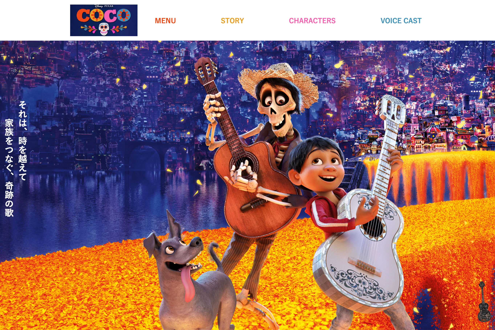
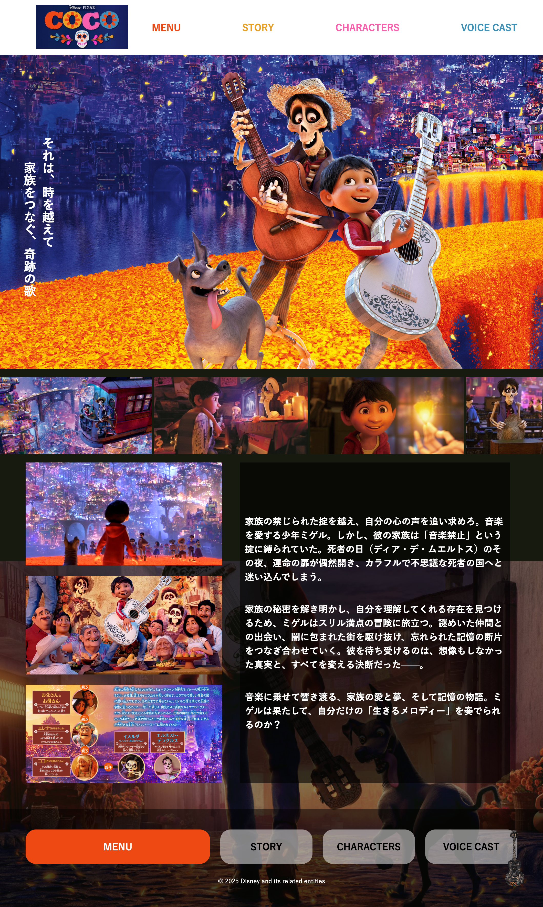
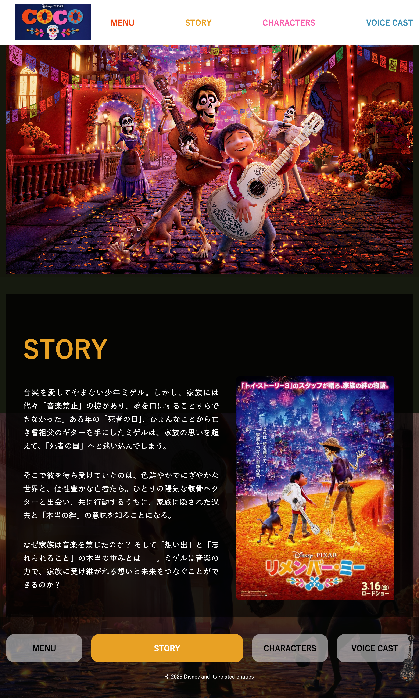
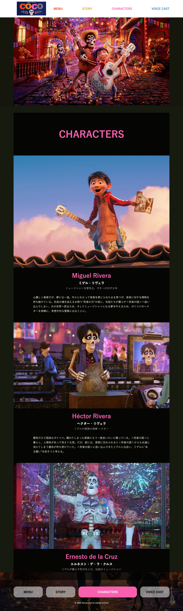
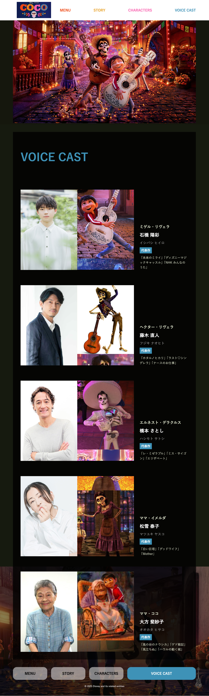

制作概要Outline
映画『リメンバー・ミー』の世界観をWeb上で再現。作品の核である「音楽」を届けるため、BGM機能を実装し、視覚と聴覚の両方で物語に没入できる構成にしました。カラフルなビジュアルで映画の魅力を引き立てています。
ディズニー・ピクサー作品が好きなファン層を主なターゲットとしています。感動的なストーリーや音楽をテーマにした映画に関心のある人、さらにメキシコ文化や「死者の日」のカラフルで独特な世界観に魅力を感じる人々を想定しています。
派手な世界観と可読性の両立を図りながら、視覚情報だけでなく音楽要素も含めて、作品の感動をWeb上で伝える体験を実現することを課題としました。
BGMによる没入感のある体験を軸に、世界観を損なわない情報設計とストーリー性のある構成を実現し、ファンにも未視聴者にも作品の魅力が伝わるサイトを目指しました。
内容詳細Detail
作品の世界観を伝えるトップページデザイン

トップページでは作品の持つ温かい世界観を色彩とビジュアルで表現し、サイトを開いた瞬間に雰囲気が伝わるよう設計しました。未視聴のユーザーでも直感的に魅力を感じ、物語の世界へ自然に引き込まれることを狙っています。
ナビゲーションは画面上部に横並びで配置し、ロゴに使用された色と対応する4色を採用しました。配色の統一と視覚的な関連性を持たせることで、デザイン全体の一体感を高めています。
作品の世界観への没入感を高めるため、クリックで音楽が再生されるアイコンを配置しました。主人公が使用するギターをモチーフとし、テーマ曲の再生によって物語の雰囲気を直感的に伝えます。
映像的な没入感とページ全体の一体感を高める設計

ギャラリーでは、映画の名シーンを自動で循環表示する構成とし、映像のフレームを追体験するような演出を意識しました。静止画でありながら映像的な流れを感じさせることで、作品の世界へ自然に引き込むことを狙っています。

フッターのメニューは、ヘッダーと同一の4色を使用し、上下の要素に視覚的なつながりを持たせました。配色の統一により、サイト全体の一体感を高めています。
人物情報を直感的に伝えるカードレイアウト

主要キャラクターを中心に、印象的なビジュアルをカード形式で配置しました。簡潔な説明を添えることで、人物像を直感的に理解でき、視覚的にも印象に残る構成としています。

カード形式で声優写真とキャラクターを並列表示し、複数画像のスライドにより印象的に見せています。固定サイズ内でスクロールさせるUIを実装し、レイアウトを崩さず動きを加えました。